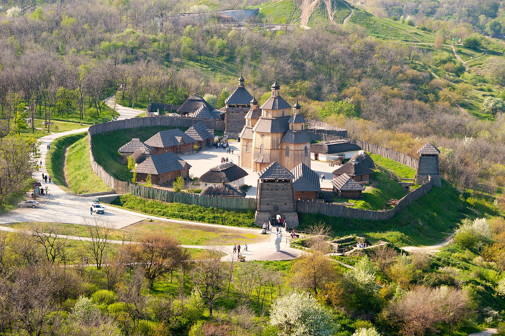
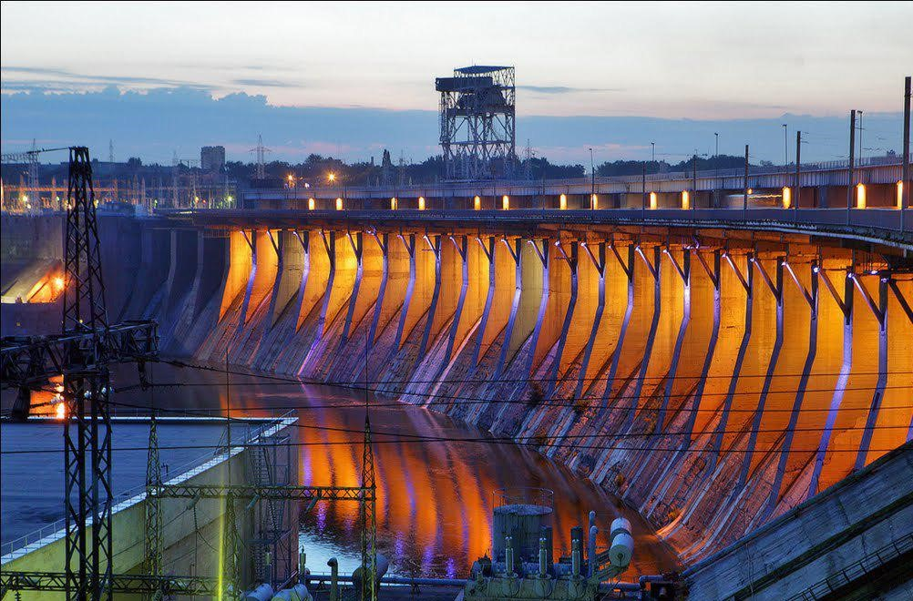
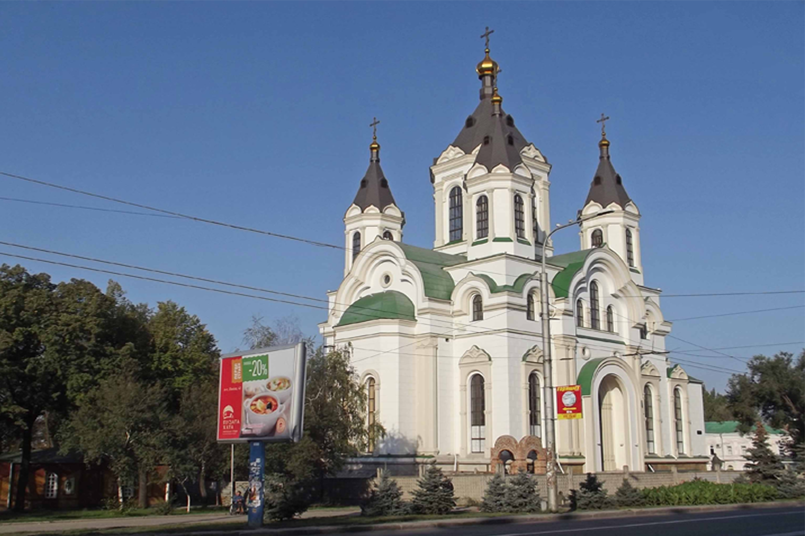
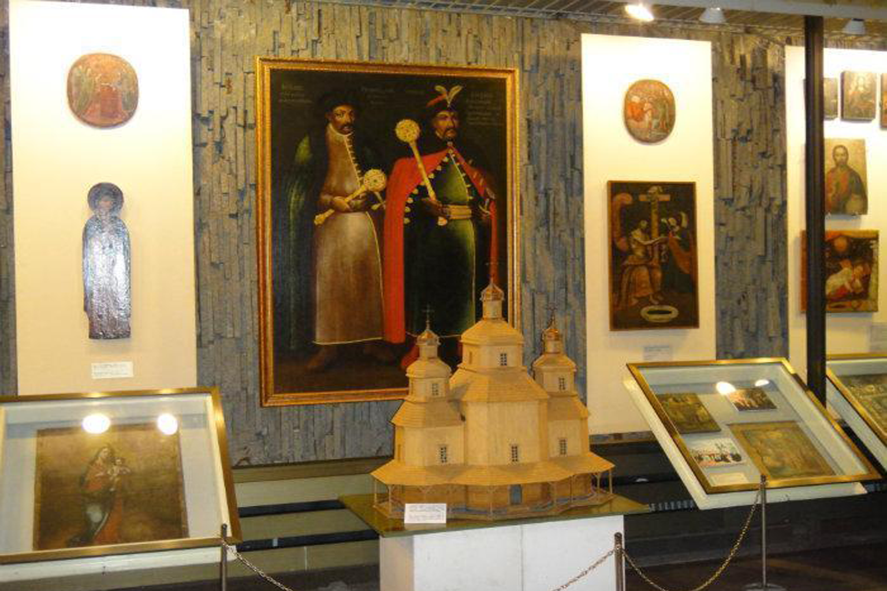
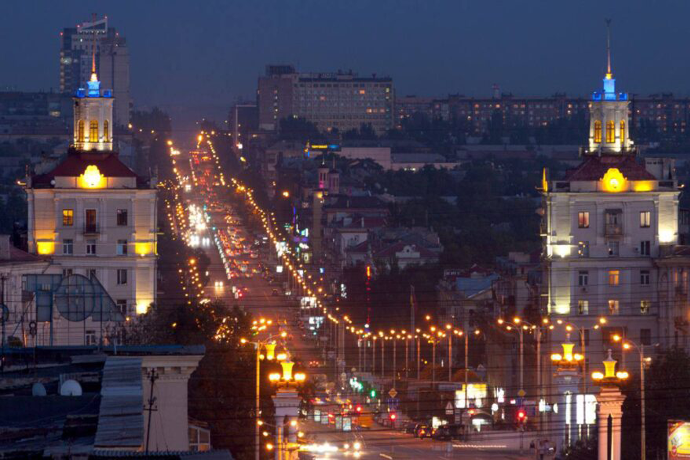
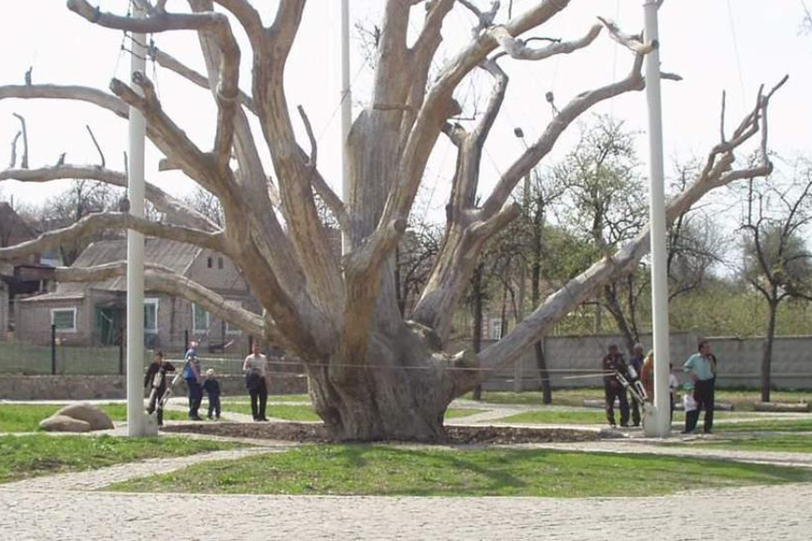
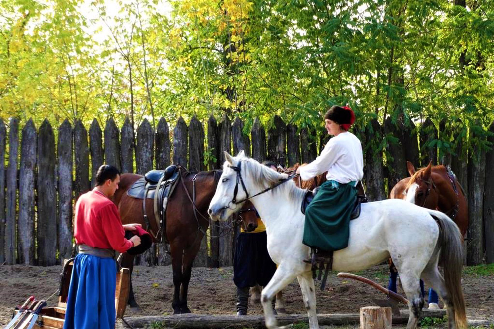

Запорізька Січ
Адреса: острів Хортиця, Хортицький район, Запоріжжя - унікальний природний заповідник, де
розташований історико-культурний комплекс "Запорозька Січ". Тут можна побачити реконструкцію
козацької фортеці та дізнатися більше про життя запорожців.

ДніпроГЕС
Адреса: вул. Сергія Серікова, Дніпровський район, Запоріжжя - одна з найпотужніших
гідроелектростанцій в Україні, що є символом індустріального розвитку Запоріжжя. Відкриває
панорамний вид на Дніпро, а Набережна магістраль поруч є популярним місцем для прогулянок.

Свято-Покровський собор
Адреса: проспект Соборний 37, Запоріжжя - величний православний храм, що
вражає своєю архітектурою. Він є однією з найбільших культових споруд міста та відіграє важливу
роль у духовному житті Запоріжжя.

Музей історії запорізького козацтва
Адреса: острів Хортиця, вул. Заповідна, 23, Хортицький район, Запоріжжя - цей музей містить
багату
колекцію артефактів, пов'язаних із козацтвом. Відвідувачі можуть побачити старовинну зброю,
документи та предмети побуту запорожців.

Музей техніки «Фаетон»
Адреса: вул. Виборзька, 8, Дніпровський район, Запоріжжя - найбільший в Україні музей техніки, де
представлено понад 150 ретро-автомобілів, військову техніку, мотоцикли та інші експонати. Це
місце
приваблює любителів історії автомобілебудування та військової справи.

Проспект Соборний
Адреса: проходить через Олександрівський, Дніпровський та Вознесенівський райони, Запоріжжя -
головна артерія Запоріжжя та найдовша вулиця України (понад 10 км). Тут розташовані ключові
культурні та історичні пам’ятки міста: театри, музеї, парки та кав’ярні, що робить його
улюбленим
місцем для прогулянок містян і туристів.

Козацький дуб
Адреса: вул. Тараса Бульби, 20, Заводський район, Запоріжжя - один із найстаріших дубів України,
якому понад 700 років. Це символ козацької могутності та місце зборів запорізьких козаків. Під
дубом часто проводяться історичні реконструкції та культурні заходи.

Запорізький краєзнавчий музей
Адреса: вул. Троїцька, 29, Олександрівський район, Запоріжжя - головний музей міста, що містить
експозиції з історії Запоріжжя від давніх часів до сучасності. Тут можна знайти археологічні
знахідки, етнографічні колекції та виставки, присвячені розвитку промисловості міста.

Кінний театр "Запорозькі козаки"
Адреса: острів Хортиця, Хортицький район, Запоріжжя - унікальний природний заповідник, де
розташований історико-культурний комплекс "Запорозька Січ". Тут можна побачити реконструкцію
козацької фортеці та дізнатися більше про життя запорожців.
Запоріжжя – місто з багатою історією та культурною спадщиною, відоме як край козаків та незламних.
Його
історія починається з будівництва у 1770 році Олександрівської фортеці, яка стала частиною
Дніпровської
укріпленої лінії, призначеної для захисту південних кордонів Російської імперії. Поблизу фортеці
виникло
поселення, яке згодом отримало назву Олександрівськ, а у 1921 році було перейменоване на Запоріжжя.
- Острів Хортиця: Серце козацької історії України, унікальний природний заповідник та музей під
відкритим небом. Тут розташований історико-культурний комплекс "Запорозька Січ", де можна
побачити
реконструкцію козацької фортеці та дізнатися більше про життя запорозьких козаків.
- ДніпроГЕС: Одна з найпотужніших гідроелектростанцій в Україні, символ індустріального розвитку
міста.
Панорамний вид на греблю відкривається з Набережної магістралі.
- Свято-Покровський собор: Один із найбільших православних храмів міста, що вражає своєю
архітектурою та
величчю.
- Музей історії запорізького козацтва: Розташований на острові Хортиця, цей музей представляє
багату
колекцію артефактів, пов'язаних із козацтвом, включаючи зброю, документи та предмети побуту.
- Музей техніки «Фаетон»: Найбільший в Україні музей техніки, де представлені ретро-автомобілі,
військова
техніка та інші експонати
- Проспект Соборний: Головна артерія Запоріжжя, найдовша вулиця в Україні (понад 10 км). Тут
зосереджені
найважливіші культурні, історичні та архітектурні пам’ятки міста, зокрема театри, музеї, затишні
кав’ярні та парки. Це улюблене місце для прогулянок містян і туристів.
- Козацький дуб: один із найстаріших дубів України, якому понад 700 років. Це символ козацької
могутності та місце зборів запорізьких козаків. Під дубом часто проводяться історичні
реконструкції
та культурні заходи.
- Запорізький краєзнавчий музей: головний музей міста, що містить експозиції з історії Запоріжжя
від
давніх часів до сучасності. Тут можна знайти археологічні знахідки, етнографічні колекції та
виставки, присвячені розвитку промисловості міста.
- Кінний театр "Запорозькі козаки": унікальне місце, де можна побачити захоплюючі виступи
козаків
верхи на конях, показові бої та трюки. Вистави відтворюють бойові традиції запорожців, роблячи
історію живою.
Запоріжжя має помірно-континентальний клімат з теплим літом і м'якою зимою. Найкращий час для
відвідування – весна та осінь, коли місто потопає в зелені та комфортній температурі.
Для активного відпочинку місто пропонує катання на катерах по Дніпру, екскурсії на каяках навколо
Хортиці, риболовлю та велопрогулянки мальовничими маршрутами.
Кулінарні традиції Запоріжжя поєднують українську кухню та сучасні гастрономічні тренди. Варто
спробувати козацький куліш, домашні вареники та страви з річкової риби.
Запоріжжя – ідеальне місце для тих, хто хоче відчути дух козацької слави, насолодитися природою та
познайомитися з індустріальною історією України.